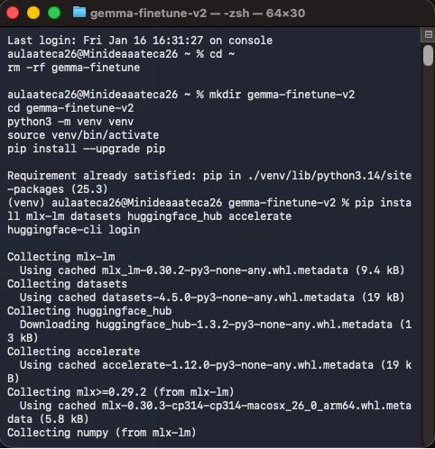
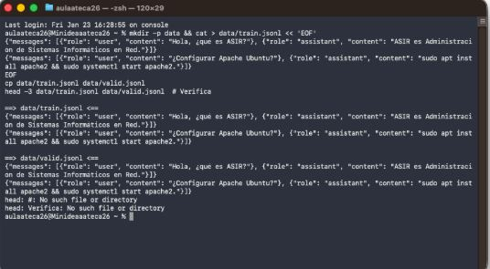
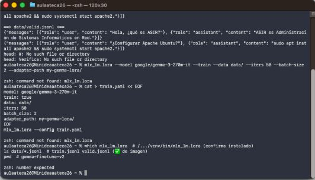
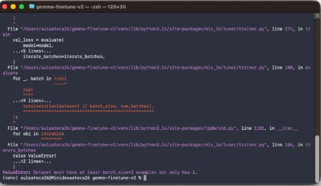
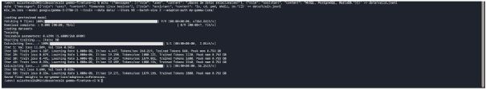
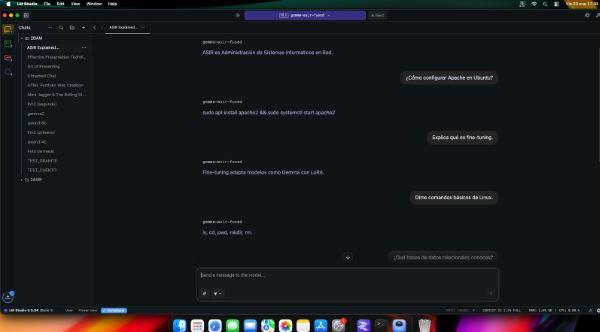

En esta práctica he realizado un proceso de Fine-Tuning (ajuste fino) utilizando la técnica LoRA (Low-Rank Adaptation). El objetivo ha sido entrenar un modelo pequeño (Gemma 2 270M) para que aprenda conceptos específicos del ciclo de ASIR y comandos de Linux.
Para empezar, he preparado un entorno aislado de Python. He creado un directorio de trabajo, activado el entorno virtual (venv) y he instalado las librerías necesarias de MLX (la librería de Apple para Machine Learning) y Hugging Face.

He creado manualmente un dataset en formato JSONL. He definido pares de preguntas y respuestas específicas sobre mi temario (definición de ASIR, comandos de Apache, etc.), generando tanto el archivo de entrenamiento (train.jsonl) como el de validación (valid.jsonl).

Durante el proceso me encontré con varios errores que tuve que solucionar antes de lograr el entrenamiento exitoso:
Error de Ejecución: Al principio intenté ejecutar el entrenamiento creando un archivo YAML de configuración manual, pero el sistema no reconocía bien el comando mlx_lm.lora o la ruta del archivo, dándome errores de "command not found" y problemas de sintaxis.

Error de Tamaño de Dataset: Posteriormente, al intentar lanzar el entrenamiento, recibí un ValueError indicando que mi dataset era demasiado pequeño para el batch_size configurado (tenía 1 ejemplo y el batch era de 2). Tuve que añadir más ejemplos a mis archivos JSONL para cumplir con los requisitos mínimos del entrenamiento.

Una vez corregidos los errores anteriores (aumentando el dataset y corrigiendo la llamada al script), el proceso de fine-tuning funcionó correctamente. El script cargó el modelo base google/gemma-2-270m-it y comenzó las iteraciones, reduciendo la pérdida (loss) progresivamente.

Finalmente, probé el modelo afinado. El resultado fue exitoso: al preguntarle "¿Cómo configurar Apache en Ubuntu?", el modelo respondió exactamente con el comando específico que le enseñé, validando que el aprendizaje se ha realizado correctamente.
